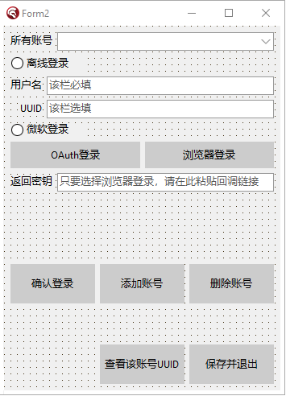

本章教大家如何使用微软登录
切记，本章使用的是浏览器回显登录，如果你的启动器不愿意支持这个，请转到下一章OAuth登录。
首先哈，正如文章标题，本章使用的是浏览器回显登录。那么什么是浏览器回显呢？
首先，让我们看看Minecraft官方Wiki上是怎么说的吧：点我
首先，Minecraft的客户端ID被硬编码为00000000402b5328，这是众所周知的。我们可以在浏览器中访问下面那一串HTTP。紧接着，也许会弹出一个让你登录Minecraft的登录窗口，也许不会弹。
那么，有些时候会弹出一个登录窗口是怎么回事呢？此时可能是因为你使用的Windows浏览器不是Edge，并且从未登录过任一微软账号的原因。如果没有弹出登录窗口，而是直接改变了网址栏，变成了【https://login.live.com/oauth20_desktop.srf?code=<登录代码> 】类似于这样的网址。那多半是你的浏览器已经保存了你有关Minecraft微软登录的Cookie，请删掉该浏览器中的所有Cookie后再使用。
好了，然后我再来给大家介绍一下在程序中使用WebBrowsers进行登录而不是使用外置浏览器进行登录的方式：其实此时与外置浏览器登录没有任何区别，只是我们使用的是IE内核的浏览器，与Chromium内核的浏览器的Cookie保存位置不一样，因此即使我们在程序中删掉有关登录信息的任何Cookie也不会有任何问题。
我们所需要实现的目的是：在程序中或者在外置浏览器中，登录网址后对其返回的所有Json进行解析，最终得到Minecraft的登录令牌。
这里切记几点问题：
- 由于Minecraft的登录令牌时限为24个小时，因此，在这24个小时内，你不能将你的accessToken暴露给你不熟悉的任何一个人。
- Minecraft的刷新令牌实现为一个月，因此，在这一个月内，你不能将你的refreshToken暴露给你不熟悉的任何一个人。
- 微软账号的安全性，你不可以将你的微软账号以及密码暴露给你不熟悉的任何一个人。
- 由于很多启动器在导出启动参数之时，误将AccessToken给保存到本地目录下，因此，你不可以将AccessToken以明文的形式保存在本地。【这里的明文不仅限于使用Base64加密后的Token。】，否则在MCBBS上很难审核通过。
我们可以来看看，使用登录网址所返回的代码有哪些：
首先是这个：【https://login.live.com/oauth20_desktop.srf?code=************】
我们需要做的，就是将这串返回网址code=后面的所有字符给提取出来。然后对此进行解析，最终获得Minecraft登录令牌了！
还是老样子，先来拽窗口控件吧，像我这样修改你的窗口：

由于目前我们暂时未学OAuth登录，因此这种方式将暂时搁置一下。
我们双击浏览器登录，然后在浏览器登录的按钮点击事件里，写上这么一串字：
procedure TForm2.Button7Click(Sender: TObject);
begin
ShellExecute(Application.Handle, nil, pchar(Concat('https://login.live.com/oauth20_authorize.srf',
'?client_id=00000000402b5328',
'&response_type=code',
'&scope=service%3A%3Auser.auth.xboxlive.com%3A%3AMBI_SSL',
'&redirect_uri=https%3A%2F%2Flogin.live.com%2Foauth20_desktop.srf')), nil, nil, SW_SHOWNORMAL);
end;
是的，没错！我们要做的就是调用一个执行cmd指令的程序：ShellExecute，如果你的编程语言里有直接调用系统默认浏览器打开网址的函数，你当然也可以使用哦！
然后，我们会获得一个回调链接，让玩家将回调链接输入进我们的输入框中，然后点击微软登录的单选框，最后，我们只需要点击一次添加按钮即可开始添加我们的微软账号了！
要添加微软账号，首先在我们的添加账号按钮点击事件里面，写上这样几行代码：
procedure TForm2.Button2Click(Sender: TObject);
begin
if RadioButton1.Checked then begin
... //上期离线登录的代码
end else if RadioButton2.Checked then begin
if messagebox(Handle, '你选择的是微软正版登录，登录过程可能会卡挺久，需要有耐心！有可能会失败，是否要继续呢？。', '有点久提醒', MB_YESNO+MB_ICONINFORMATION) = 7 then exit; //弹出信息框提示玩家是否使用微软登录，如果选否，则退出。
var ed: String := Edit3.Text; //将Edit3的输入框转换成String类型的。Edit3就是回调链接的那个框。
//下面开始判断，如果回调连接里面出现了&lc=，即证明回调链接输入正确。
if ed.IndexOf('&lc=') <> -1 then begin
//然后此处开始将code后面的字符串切开。
if ed.IndexOf('code=') <> -1 then begin
ed := ed.Substring(ed.IndexOf('code=') + 5, ed.Length);
end; //判断回调链接是否合理，共计后面所有的字符都属于需要用到的。
var cpro: TProc := procedure begin //定义一个线程【这里用到了TTask，这个是我们还没学到的，不过我们也即将要学习了！】
try
accm := Account.InitializeAccount(ed, 'post'); //给初始化方法设定一个post值，此处使用了自定义类中的构造函数。
at := accm.GetAccessToken; //获取AccessToken登录秘钥
if at = 'noneaccount' then exit; //如果at没有账号，则为返回方法。
rt := accm.GetRefreshToken; //获取RefreshToken刷新秘钥
un := accm.GetUserName; //获取玩家名字
ud := accm.GetUUID; //获取UUID
except //读取不出则抛出报错。然后执行。这里为网络连接超时所产生的报错。
messagebox(Handle, pchar(Concat('你的网络连接超时了，请连接之后再进行网络请求。或者如果你连接了，重试一次即可。')), '连接超时引发的报错', MB_ICONERROR);
exit; //弹出信息框后退出方法。
end; //将所有目标添加到配置文件。
//这里需要配置5个值。type、name、uuid、accessToken、refreshToken，
//当然，如果你想的话，你可以为accessToken和refreshToken进行加密处理。
(AccountJson.GetValue('account') as TJsonArray).Add(TJsonObject.Create
.AddPair('type', 'microsoft')
.AddPair('name', un)
.AddPair('uuid', ud)
.AddPair('access_token', at)
.AddPair('refresh_token', rt)
);
ComboBox1.ItemIndex := ComboBox1.Items.Add(Concat(un, '（微软）')); //为下拉框新建一个元素，为【用户名+（微软）】图示。
Edit3.Text := ''; //给回调链接输入框重新设为空。
messagebox(Handle, '添加成功！', '添加成功', MB_OK+MB_ICONINFORMATION);
end; //添加成功！
TTask.Run(cpro); //使用TTask执行上述过程。
end else messagebox(Handle, '你的回调链接输入错误了，请重试', '回调链接错误', MB_OK+MB_ICONERROR); //如果回调链接不满足规范，则弹出信息框。
end;
end;
上述部分，我们用到了TTask，那么什么是TTask呢？众所周知，C#中有一个Task类，这个与C#那个其实差不多，都是新生成一个线程执行里面的函数罢了！在此之前，我们需要引用一个类：
uses
Threading;
引用上述Threading类即可！
其中，我们需要接触到新类的概念了。什么是新类？新类就是在type中声明一个别的类，不在原本的类里面的，就叫新类【类比于Java语言，新定义一个public static class的一致。】
看了上面的代码，大家可能会对我们添加账号看得比较懂了吧。
但是，我们要新建的类，可不是public static class哦！而是在外部定义一个class。就相当于Java中的以下代码：
public class Hello{
public static void main(String[] args){
Hello2 hello = new Hello2();
hello.cateat();
}
}
class Hello2{
public void cateat(){
System.out.println("The Cat Like Eat Fish!!");
}
}
上述代码会输出一个The Cat Like Eat Fish!!，我们要声明的类，就在Hello2这一部分啦！
我们首先往上翻，找到type TForm2这个类，然后像我这么写：
type
TForm2 = class(TForm) //这里的括号内，表示继承。
//如果继承的是个类，则只能填一个，反之，interface接口可以填入多个哦！
...//Some Control
end;
Account = class //此处定义一个新类。不用多写一个type了。
private
un, at, uu, rt: String;
tun, tat, tuu, tct, tbs: String;
public
constructor InitializeAccount(key, rr: String); overload; //构造函数
// constructor InitializeAccount(sn, un, pwd, ct, id, rr: String); overload;
// constructor InitializeOAuth(key, token, rr: String); overload;
function GetAccessToken: String;
function GetRefreshToken: String;
function GetUserName: String;
function GetUUID: String;
// function GetThirdAccessToken: String;
// function GetThirdClientToken: String;
// function GetThirdUserName: String;
// function GetThirdUUID: String;
// function GetThirdBaseCode: string;
class function GetHttpf(key, web: String): String;
class function GetHttpy(key, web: String): String;
class function GetHttph(key, web: String): String;
end;
我们定义和上面一样多的函数就可以了！
此时，我们可以看到，怎么会这么多函数呢？虽然有些被注释了哈。。
原因很简单，我只是把下一章才教的外置登录和下下一章教到的微软OAuth登录提前将方法定义好了。如果我们去掉下两章的代码，则就是将上方注释的样子。如果去掉注释，则就是下两章说道的内容了！
oh，我发现了一个新的问题，大家应该还没见过constructor这个关键字吧，其实这个关键字是构造函数的意思，也就是类似于java中如下的写法：
public class Hello{
private final int i;
private Hello(int i){
this.i = i;
}
public static void main(String[] args){
Hello hel = new Hello(10);
System.out.println(hel.i);
}
}
这么写，上面的private Hello就相当于Delphi中的constructor了！但只不过我们在Java中的写法是private的，而在Delphi里面的写法是public下面的啦！
而且，我们这里不仅声明了一个相同名称的构造函数，这里给大家普及一个知识点，在Delphi中，我们使用构造函数或者别的方法时，如果使用到同一个函数名，但是参数不一样。直接写会报错，此时，我们应该在该函数的末尾声明为overload即可。，这个的意思是多态。
还有一个是关于继承的，在Java或者Kotlin中，我们都有override关键字，或者是它的注解，用于声明这个方法是继承得来的方法，而Delphi中也有override关键字，我们只需要在继承的方法后面写上override就可以了！
因此，就是这么简单了！
然后，我们还要来说说看静态方法，在Delphi中，是不存在static关键字的，但是我们可以用另一种方式来声明一个静态方法，就是在方法前面加上一个class关键字，这样，我们就可以直接通过【类名.方法名】来获取到这个方法了。
好了，接着说，我们先把下面的GetHTTPf、GetHTTPy、GetHTTPh写好之后，我们再去写构造函数啦。
首先，键入以下代码：
implementation //在implementation下方写。
class function Account.GetHTTPf(key: string; web: string): string;
begin
var ss := TStringStream.Create('', TEncoding.UTF8, False); //首先定义一个流。用于为Post写入请求头。
var http := TNetHTTPClient.Create(nil); //定义一个TNetHTTPClient，用于进行网络Get、Post指令。
try
ss.WriteString(key); //写入流
ss.Position := 0; //让流的位置返回0
with http do begin //with关键字是可以无需使用http.某个函数，直接使用就好。
AcceptCharSet := 'utf-8'; //设置网络请求编码，默认都是utf-8
AcceptEncoding := '65001'; //设置编码代号，此为默认编码
AcceptLanguage := 'en-US'; //设置网络请求语言，此为英文。
ResponseTimeout := 200000; //设置请求时长
ConnectionTimeout := 200000; //设置连接时长
SendTimeout := 200000; //设置发送时长【完美的英文理解】，以下为设置请求协议。
SecureProtocols := [THTTPSecureProtocol.SSL3, THTTPSecureProtocol.TLS12, THTTPSecureProtocol.TLS13]; //请求协议，这里调用了SSL3、TLS12和TLS13。
HandleRedirects := True; //可以网址重定向，也就是说假如Post、Get的网址有重定向，这样也可以获取到。
ContentType := 'application/x-www-form-urlencoded;charset=utf-8'; //设置请求类型，这里是x-www-form-urlencoded。
var res := Post(web, ss); //现在开始Post请求。将写入的头定义的流填入。
result := res.ContentAsString; //返回网址的请求值，将其转换成String类型。
end;
finally
http.Free; //释放资源
ss.Free; //释放资源
end;
end;
class function Account.GetHTTPy(key, web: String): String;
begin
var ss := TStringStream.Create('', TEncoding.UTF8, False);
var http := TNetHTTPClient.Create(nil);
try
ss.WriteString(key); //该方法与上面的一致
ss.Position := 0;
with http do begin
AcceptCharSet := 'utf-8';
AcceptEncoding := '65001';
AcceptLanguage := 'en-US';
ResponseTimeout := 200000;
ConnectionTimeout := 200000;
SendTimeout := 200000;
SecureProtocols := [THTTPSecureProtocol.SSL3, THTTPSecureProtocol.TLS12, THTTPSecureProtocol.TLS13];
HandleRedirects := True;
ContentType := 'application/json;charset=utf-8'; //唯独这里不一样，这里使用了json作为请求头类型。
Accept := 'application/json'; //这里将Accept类型也换成json，只是少了charset=utf-8的。
var res := Post(web, ss); //然后依旧是一致的哦！
result := res.ContentAsString;
end;
finally
http.Free;
ss.Free;
end;
end;
class function Account.GetHTTPh(key, web: String): String;
begin
var ss := TStringStream.Create('', TEncoding.UTF8, False);
var http := TNetHTTPClient.Create(nil);
try
with http do begin //这里的h方法，是Get的方法，与上面有些许不一致。
AcceptCharSet := 'utf-8'; //这里没有将key写入流，因为此时，这个流是用于接收Get请求的返回值的。
AcceptEncoding := '65001';
AcceptLanguage := 'en-US';
ResponseTimeout := 200000;
ConnectionTimeout := 200000;
SendTimeout := 200000;
SecureProtocols := [THTTPSecureProtocol.SSL3, THTTPSecureProtocol.TLS12, THTTPSecureProtocol.TLS13];
HandleRedirects := True; //此处与上面的均一致。
CustomHeaders['Authorization'] := Concat('Bearer ', key); //这里使用自定义头，使用了Authorization作为键，然后Bearer key作为请求的密钥。
Get(web, ss); //这里对web进行get请求，然后将一个已经初始化的空流当作第二个参数填入进去。此处不需要使用一个变量接收Get值。
result := ss.DataString; //返回流的字符串数据。
end;
finally
http.Free;
ss.Free;
end;
end;
好了，注释都写好了！我们需要注意的是，在Delphi中，对于Get、Post的请求均不一致，如Post请求需要提前在第二个参数里写上key值，而Get请求，则是直接在CustomHeaders里面，写上键，和值即可。
然后，我们需要注意的是：在别的语言中，可能并没有Delphi这么详细的设置，如设置AcceptEncoding := '65501'、AcceptCharSet := 'utf-8'等的设置，大多数语言都会有一个默认值。大家当然也可以完全按照所需要的语言教程中的HTTP请求的默认值来写哦！
然后嘛，将这一串代码复制进Delphi中，可能会发生大报错。原因是我们还没有引用任何一个头文件。这个TNetHTTPClient是需要引用好几个头文件才能够正常使用的。
我们需要引用下方几个头【如果你所编写的语言需要import什么类，你就照常引用就好了】
uses
System.Net.URLClient, System.Net.HttpClient, System.Net.HttpClientComponent;
我们需要引用整整三个头文件，是的，TNetHTTPClient就是这样！
当然，如果你想自己找头文件引用的话，你可以进入窗口视图，在右下角的Palette中，搜索TNetHTTPClient，然后将其中的某个控件拖到窗体上，再进入一次代码视图，然后再回到窗体视图，右键TNetHTTPClient删掉这个控件即可。
自然，照我上面一说，大家肯定认为这个TNetHTTPClient是一个控件。那为什么我们不在Delphi里面直接拖入一个TNetHTTPClient控件，而非要在程序中自己Create一个呢？原因很简单，拖入的控件无法free资源，因为一旦free后，其他时候再想调用就会很麻烦，而且无法做到每个函数执行完一次后直接free资源，从而达到内存不会泄漏，同时内存可以及时的释放资源。综上所述，我们需要在程序里自己Create一个TNetHTTPClient控件。
然后嘛，自然就是我们的
function GetAccessToken: String;
function GetRefreshToken: String;
function GetUserName: String;
function GetUUID: String;
这几个函数啦。这几个函数尤为简单，我们为什么会这么写呢？原因不得而知，我们有几个全局变量是private类型的，因此我们需要写上这么几个函数啦！
然后，还有，我不是很清楚Java里面的private函数作用域是在本文件里到处可以使用，还是在本类中到处可以使用。我只知道Delphi里面，private内的变量或函数的作用域是在本单元文件中的到处都可以使用，无关于类。
但是，我们还是要写上这么四个函数【后期做第三方Authlib登录的时候也需要】，因为后面我们的启动游戏过程中，会启动过程中调用一次微软的验证服务器来验证我们的accessToken是否合法。
我们直接开始写吧：
function Account.GetAccessToken: string;
begin
result := at;
end;
function Account.GetRefreshToken: string;
begin
result := rt;
end;
function Account.GetUserName: string;
begin
result := un;
end;
function Account.GetUUID: string;
begin
result := uu;
end;
那么，这里就是我们的函数了！是不是很简单呢？自然，我们也可以对其进行判空，例如判断at、rt、un、uu全局变量是否为空，如果为空，则raise一个Exception，都是可以的！
这几个变量我在之前已经说过了哦！大家可以回去看看我的Account这个类里面的private代码块下面的全局变量哦！
好了好了，接下来才是重头戏，我们需要写微软登录的构造函数InitializeAccount了！这个的中文意思是初始化账号哦！
//初始化微软登录
constructor Account.InitializeAccount(key, rr: String); //构造函数实现
const //设置4个请求网址
micro = 'https://login.live.com/oauth20_token.srf';
xbox = 'https://user.auth.xboxlive.com/user/authenticate';
xsts = 'https://xsts.auth.xboxlive.com/xsts/authorize';
mccc = 'https://api.minecraftservices.com/authentication/login_with_xbox';
ishas = 'https://api.minecraftservices.com/minecraft/profile';
begin
var k1: String;
if rr = 'refresh' then
k1 := Concat('client_id=00000000402b5328',
'&refresh_token=', key,
'&grant_type=refresh_token',
'&redirect_uri=https://login.live.com/oauth20_desktop.srf',
'&scope=service::user.auth.xboxlive.com::MBI_SSL')
else
k1 := Concat('client_id=00000000402b5328',
'&code=', key,
'&grant_type=authorization_code',
'&redirect_uri=https%3A%2F%2Flogin.live.com%2Foauth20_desktop.srf',
'&scope=service%3A%3Auser.auth.xboxlive.com%3A%3AMBI_SSL');
//这里是请求microsoft的。
Form3.Label8.Caption := '正在请求microsoft中……';
var t1 := Account.GetHttpf(k1, micro); //传值进方法并将返回值设置。
var j1 := TJsonObject.ParseJSONValue(t1) as TJsonObject; //设置json解析
var w1 := j1.GetValue('access_token').Value; //获取assets_token，下面继续设置请求参数。
//这里是请求xbox的
var k2 := Concat('{"Properties":{"AuthMethod":"RPS","SiteName":"user.auth.xboxlive.com","RpsTicket":"d=', w1, '"},"RelyingParty":"http://auth.xboxlive.com","TokenType":"JWT"}'); //设定xbox的请求头。
var t2 := Account.GetHttpy(k2, xbox);
var j2 := TJsonObject.ParseJSONValue(t2) as TJsonObject;
var w2 := j2.GetValue('Token').Value;
//这里将获取到uhs的值。
var r1 := j2.GetValue('DisplayClaims') as TJsonObject;
var ur := r1.GetValue('xui') as TJsonArray;
var uhs := ur[0].GetValue<String>('uhs');
//这里是请求xsts的。
var k3 := Concat('{"Properties":{"SandboxId":"RETAIL","UserTokens":["', w2, '"]},"RelyingParty":"rp://api.minecraftservices.com/","TokenType":"JWT"}');//设定xsts的请求头。
var t3 := Account.GetHttpy(k3, xsts);
var j3 := TJsonObject.ParseJSONValue(t3) as TJsonObject;
var w3 := j3.GetValue('Token').Value;
//这里将判断uhs是否一致【基本上都会一致的，没有存在不一致的情况。。。】
var rr1 := j3.GetValue('DisplayClaims') as TJsonObject; //对uhs进行json解析。
var uur := rr1.GetValue('xui') as TJsonArray;
var uhhs := uur[0].GetValue<String>('uhs');
if uhhs <> uhs then raise Exception.Create('Microsoft uhs is not equal');
//这一步是请求mc的。
var k4 := Concat('{"identityToken":"XBL3.0 x=', uhs, ';', w3, '"}');
var t4 := Account.GetHttpy(k4, mccc);
var j4 := TJsonObject.ParseJSONValue(t4) as TJsonObject;
var w4 := j4.GetValue('access_token').Value; //获取到accesstoken。
//PS：直到这一步，我们才正式的获取到accessToken。很复杂，但也很耐人寻味。
//获取是否为购买了mc的样子。
var t5 := Account.GetHttph(w4, ishas);
var j5 := TJsonObject.ParseJSONValue(t5) as TJsonObject; //将通过accessToken的json值，解析出来，并判断里面是否有以下键值。
try //判断里面是否有name、id值，如果有，则将rt、at一并赋值为refresh_token、access_token。
un := j5.GetValue('name').Value;
uu := j5.GetValue('id').Value;
rt := j1.GetValue('refresh_token').Value;
at := j4.GetValue('access_token').Value;
except //如果里面没有值，则抛出报错。
if messagebox(Form2.Handle, '不好意思，您的Microsoft账户并没有购买Minecraft，请问是否立即前往官网购买？', '暂未购买，是否前往商店', MB_YESNO+MB_ICONERROR) = 6 then //暂未购买。
begin //打开一个网址，请用户购买。
ShellExecute(Application.Handle, nil,
'https://www.minecraft.net/zh-hans/store/minecraft-java-edition',
nil, nil, SW_SHOWNORMAL)
end;
at := 'noneaccount';
end;
end;
好了好了，这就是我们的构造函数了哦！
至于为什么要这么写呢？我们来看看各个请求的返回json数据是怎么样的吧！
首先是第一个：请求Microsoft的步骤！
POST https://login.live.com/oauth20_token.srf
Content-Type: application/x-www-form-urlencoded
&code=key&grant_type=authorization_code&redirect_uri=https%3A%2F%2Flogin.live.com%2Foauth20_desktop.srf&scope=service%3A%3Auser.auth.xboxlive.com%3A%3AMBI_SSL
其返回的数据是：
| 参数 | 描述 |
|---|---|
| token_type | 总是Bearer。 |
| expires_in | 有效时间：以秒为单位，这里是24小时。 |
| scope | 请求数据，这里请求的是xbox.com。 |
| access_token | 你的Access Token，但是这个无法用于启动游戏，这个是用来请求下一步操作的。保存它。 |
| refresh_token | 你的Refresh Token，这个可以用来重置账号。 |
| user_id | 你登录时用的账号id，每个用户只有一份。 |
| foci | 暂不清楚用途，一直都是1。 |
如果你是刷新账号的话，只需要把以上的请求参数修改成refresh_token即可！
下面我们再来看看请求xbox的吧，这里我们需要用到上一次的access_token。
POST https://user.auth.xboxlive.com/user/authenticate
Content-Type: application/json
Accept: application/json
{
"Properties": {
"AuthMethod": "RPS",
"SiteName": "user.auth.xboxlive.com",
"RpsTicket": "d=<access_token>"
},
"RelyingParty": "http://auth.xboxlive.com",
"TokenType": "JWT"
}
其中，RpsTicket里面，我们在填入access_token的时候，我们需要在前面填入一个d=，这点必须。
其返回的数据为：
| 参数 | 描述 |
|---|---|
| IssueInstant | 你的请求时间 |
| NotAfter | 你的请求时间【与上者相同】 |
| Token | 你的Xbox Access Token，保存它。 |
| DisplayClaims | 请求显示要求，对于每个微软软件登录操作各不相同，例如我的世界地下城。 |
| xui | 显示你的要求之一，这里用xui写。 |
| uhs | 这里是你的uhs代码，保存它。 |
在这里，我们需要保存两个东西，第一个是uhs，第二个是Token。
再来看看xsts的请求数据吧，这里用到我们上一步用到的Token值。
POST https://xsts.auth.xboxlive.com/xsts/authorize
Content-Type: application/json
Accept: application/json
{
"Properties": {
"SandboxId": "RETAIL",
"UserTokens": [
"xbox_token"
]
},
"RelyingParty": "rp://api.minecraftservices.com/",
"TokenType": "JWT"
}
其返回的数据与上方的一致，并且uhs也是一致的，我们只需要保存内部的Token即可！
下面我们就可以直接获取Minecraft的最终Access Token了！！我们的xsts获取的Token刚好可以用于验证我们的Minecraft。
POST https://api.minecraftservices.com/authentication/login_with_xbox
Content-Type: application/json
Accept: application/json
{
"identityToken": "XBL3.0 x=<uhs>;<xsts_token>"
}
这里的参数拼接可能有些奇怪，但也根本不影响我们书写！
其返回的数据是：
| 参数 | 描述 |
|---|---|
| username | 用户的验证名称，这里并不是用户的最终UUID…… |
| roles | 这里应该是空数组，不清楚用途，应该是用户属性之类的。 |
| access_token | 你的老朋友，Access Token，该Token需要保存，后启动游戏。 |
| token_type | 持有者，一直都是Bearer |
| expires_in | 有效期，这里是24小时，也就是一天。 |
现在我们需要验证用户的账号里是否购买了Minecraft，如果购买了，则获取它的用户名和UUID。
我们看到wiki上写了一个获取mcstore的，但是着实想了想，根本没必要啊……我们可以直接获取用户数据，最后获得其uuid和名称，如果获取不到的话，就抛出报错，将错误展现给我们的用户即可！
来看验证Minecraft有效性：
GET https://api.minecraftservices.com/minecraft/profile
Header[Authorization]: Bearer <your access token>
上面的your access token写上你的登录用的AccessToken。然后前面填入的是Header哦！
其返回的数据是：
| 参数 | 描述 |
|---|---|
| id | 你账号的真实UUID |
| name | 你账号的真实用户名 |
| skins | 账号皮肤 |
| capes | 账号披风 |
对于皮肤和披风的解析请自行参照官方结构，这里暂不赘述。
如果用户未拥有Minecraft，则解析看起来如下：
| 参数 | 描述 |
|---|---|
| path | 用户请求错误的路径 |
| errorType | 错误类型：这里应该是NOT_FOUND |
| error | 错误标志 |
| errorMessage | 错误信息，这里会描述你为什么会遇到错误【英文】 |
| developerMessage | 开发者信息 |
好了，那么我们的请求链接就写完了，大概就是这样的啦！各位可以看看啦！
这么写完了以后，我们再次回到我们的按钮，我们惊讶的发现了，我们的按钮已经设置完毕了！那么，此时此刻，我们就可以回到我们的主窗口，点击我们的启动游戏按钮，然后键入以下代码：
procedure TForm1.Button1Click(Sender: TJsonObject);
begin
... //前面省略
if typetemp = 'offline' then begin //如果type键等于offline，则执行。
PlayerName := chooseAbout.GetValue('name').Value; //设置为name
PlayerUUID := chooseAbout.GetValue('uuid').Value; //设置为uuid
PlayerAcTo := PlayerUUID; //accessToken等于uuid
PlayerType := 'Legacy'; //type为Legacy。
PlayerAuth := ''; //为空
end //将末尾分号去掉。
else if typetemp = 'microsoft' then begin
PlayerName := chooseAbout.GetValue('name').Value; //设置为name
PlayerUUID := chooseAbout.GetValue('uuid').Value; //设置为uuid
PlayerAcTo := chooseAbout.GetValue('access_token').Value; //设置为accessToken
PlayerType := 'msa'; //type为msa。这样才能在多人联机中发言。
PlayerAuth := ''; //为空
end;
... //后面省略
end;
然后，此时此刻我们再尝试一下启动游戏！成功了！微软登录成功了！